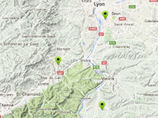

Calculates the center and the best zoom for all markers on the map, and show it.
Usage instructions:
Add this script to map GameObject.
Add a few markers on the map and press «Center».
Add this script to map GameObject.
Add a few markers on the map and press «Center».
GetCenterPointOfMarkersExample.cs
/* INFINITY CODE 2013-2016 */
/* http://www.infinity-code.com */
using UnityEngine;
namespace InfinityCode.OnlineMapsExamples
{
[AddComponentMenu("Infinity Code/Online Maps/Examples (API Usage)/GetCenterPointOfMarkersExample")]
public class GetCenterPointOfMarkersExample : MonoBehaviour
{
private void OnGUI()
{
if (GUI.Button(new Rect(5, 5, 100, 20), "Center"))
{
Vector2 center;
int zoom;
// Get the center point and zoom the best for all markers.
OnlineMapsUtils.GetCenterPointAndZoom(OnlineMaps.instance.markers, out center, out zoom);
// Change the position and zoom of the map.
OnlineMaps.instance.position = center;
OnlineMaps.instance.zoom = zoom;
}
}
}
}